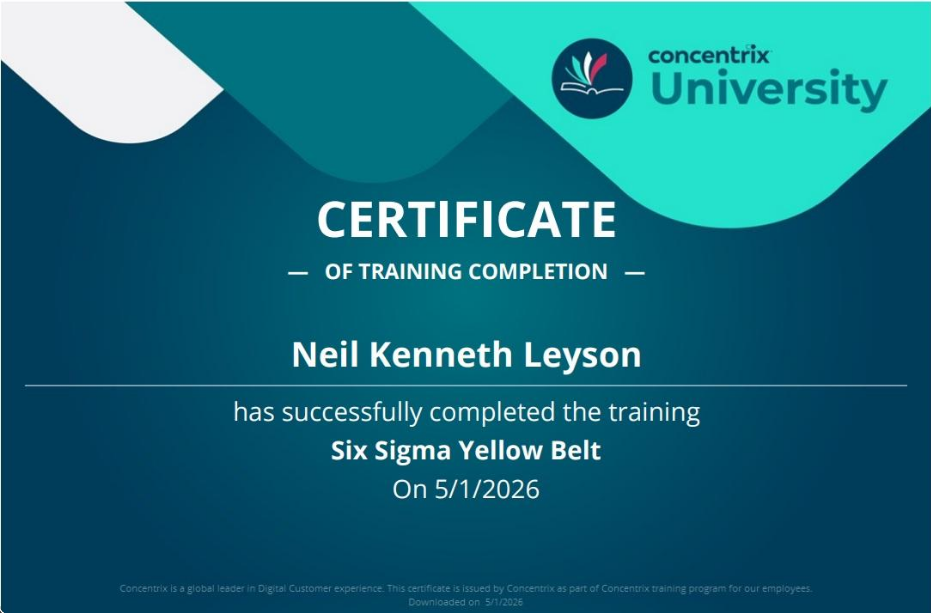
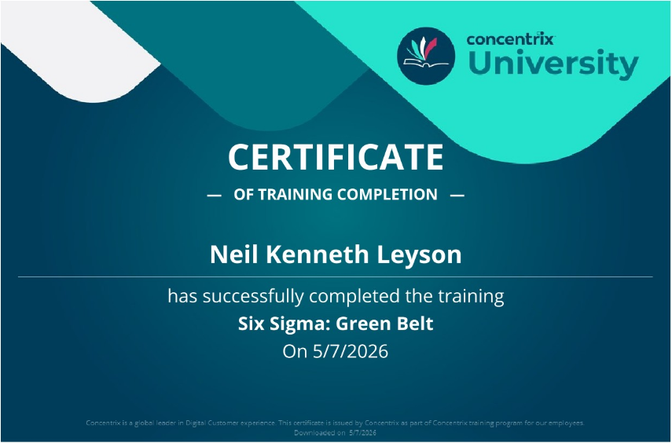
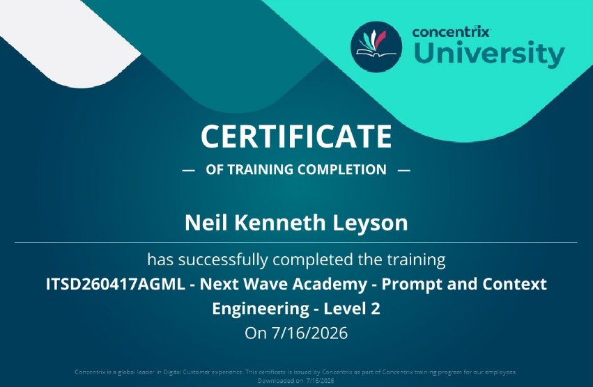
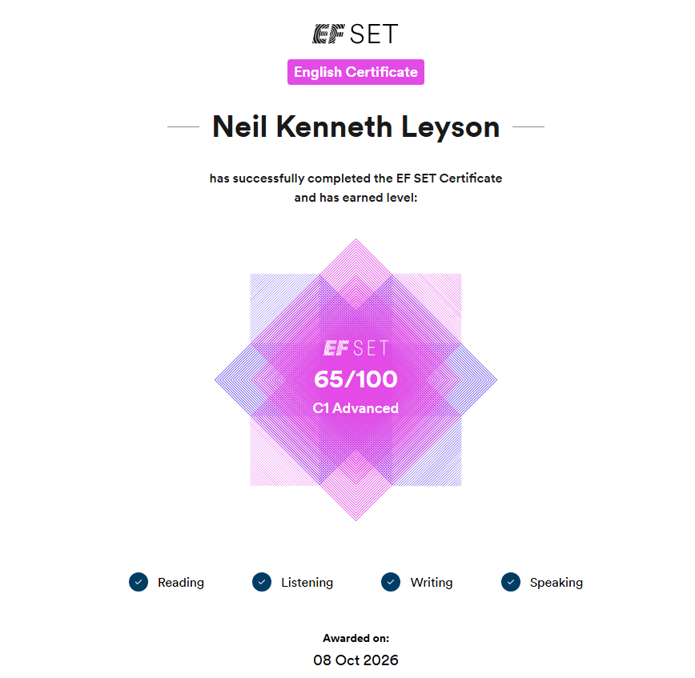

Functional Testing
Validate supported actions such as creating and cancelling requests.
My experience across customer support, quality evaluation, UAT, product management, and software quality engineering helps me connect technical validation with business outcomes.
Selected work across quality engineering and product validation
Structured test scenarios, coverage analysis, and risk-based validation.
TEST STRATEGY ↗Reproducible defect reports, evidence gathering, and root-cause collaboration.
DEFECT ANALYSIS ↗End-to-end business workflows designed around real user needs.
USER ACCEPTANCE ↗UI and end-to-end automation for identified critical application flows.
TEST AUTOMATION ↗A proof of concept for AI-assisted story review and test management.
AI-ASSISTED QA ↗Release validation, risk visibility, and concise quality reporting.
RELEASE QUALITY ↗A sample functional testing project demonstrating positive and negative scenarios, validation logic, and risk-based quality thinking.
Purpose and scope
The fictional application is an employee self-service portal where employees can submit, review, and cancel time-off requests. The objective is to validate core workflows and identify validation, authorization, and edge-case scenarios.
Coverage across key risk areas
Validate supported actions such as creating and cancelling requests.
Check that invalid inputs and unsupported workflows are handled correctly.
Consider date boundaries, overlapping requests, and unusual inputs.
Verify users cannot access data or functions outside their permissions.
Representative functional and negative test coverage
| Test ID | Scenario | Test Condition | Expected Result |
|---|---|---|---|
| TC-001 | Submit valid request | User selects a valid future date and submits. | Request is submitted with the appropriate status. |
| TC-002 | Missing date | User submits without selecting a required date. | Validation appears and the request is not submitted. |
| TC-003 | Overlapping request | Selected dates overlap an existing approved request. | The conflicting request is prevented with appropriate feedback. |
| TC-004 | Cancel request | User cancels an eligible submitted request. | Status changes to Cancelled. |
| TC-005 | Restricted request | User attempts to access another employee's request. | Unauthorized access is denied. |
| TC-006 | Same start and end date | User selects the same date for both fields. | Accepted if single-day time off is supported. |
| TC-007 | Refresh after submission | User refreshes after submitting a request. | The request remains saved with the correct status. |
| TC-008 | Session expiration | The session expires while accessing the request page. | User must reauthenticate and protected information remains secure. |
Example of structured test steps and expected results
How I approach quality
Translate requirements into testable scenarios and identify gaps.
Validate expected behavior and how the application handles invalid input.
Consider usability, data integrity, business processes, and downstream effects.
Portfolio note: This is a fictional demonstration project and contains no confidential company or customer data.
A demonstration of how I document unexpected behavior, establish reproducible steps, compare expected versus actual results, and investigate potential causes and business impact.
Clear documentation for investigation and resolution
Environment: Web Application / Chrome
Component: Customer Profile
Repeatable steps to confirm the behavior
Identify the difference between intended and observed behavior
After saving the profile, the customer's status should update to Inactive and remain Inactive after refreshing the page.
EXPECTED BEHAVIORThe interface initially displays the updated status, but after refreshing the page the customer's status returns to Active.
OBSERVED DEFECTLook beyond the visible symptom
The UI appears to accept the change successfully, suggesting the initial client-side operation completed without an error.
Refreshing the page reveals that the updated value was not persisted correctly.
Users may rely on an incorrect customer status, potentially causing incorrect downstream processing or reporting.
Review the save request, API response, persistence layer, and subsequent profile retrieval to determine where the state is lost. These are investigation areas, not a confirmed root cause.
Examples of defect documentation and supporting evidence
A reported issue involving batch-released schedules and the Capacity Planning Staffing table.

An example of documenting unexpected data behavior after changing a forecasting interval.

An example of documenting a failed user workflow with reproduction steps and expected results.

Reduce back-and-forth and support faster investigation
Clear reproduction steps, precise expected and actual results, environment details, frequency, and business impact help developers and stakeholders understand the problem quickly.
My approach is to investigate beyond the visible symptom whenever possible. I consider the complete workflow and ask where the data, state, or expected behavior may have broken down.
Portfolio note: The DEMO-1042 example is fictional. Review screenshots for any work-related details before publishing them publicly.
A fictional UAT case study demonstrating user-focused testing, business process validation, and end-to-end workflow thinking.
Business goal and UAT objective
The objective is to validate whether an employee request workflow works correctly from the user's perspective and supports the expected business process.
Allow employees to submit a request, allow the appropriate approver to review it, and provide clear status visibility throughout the process.
Confirm that the complete workflow is usable, understandable, and aligned with the expected business outcome.
From request creation to final status confirmation
The employee signs in using a valid account and navigates to the request portal.
The employee selects the appropriate request type and provides the required information.
The employee submits the request and verifies that the system provides confirmation.
The designated approver reviews the request information and makes a decision.
The employee returns to the portal and verifies the status reflects the approver's decision.
Business-focused validation points and expected outcomes
| Step | Validation | Expected Result |
|---|---|---|
| Login | User accesses the request portal. | Dashboard loads successfully. |
| Create | User enters all required information. | Request can be created without validation errors. |
| Submit | User submits the request. | Confirmation is displayed and the request receives an identifier. |
| Approval | Approver reviews the request. | Approver can approve or reject the request. |
| Status | Employee reviews the request afterward. | Status reflects the latest business decision. |
Sample documentation and structured validation steps
Connect individual tests to the user's real goal
UAT is not simply about checking whether individual test cases pass. The bigger question is whether the product allows the user to successfully complete the business task it was designed to support.
My approach connects individual validations into a complete user journey while considering usability, business rules, status transitions, notifications, data visibility, and expected outcomes.
Business-focused quality thinking
Understand the business outcome behind a requirement instead of testing only the interface.
Validate the product using realistic workflows and user goals.
Connect multiple system interactions into a complete workflow.
Confirm the delivered functionality satisfies expected business behavior.
Portfolio note: This is a fictional demonstration project and contains no confidential, proprietary, customer, or company information.
A portfolio case study demonstrating how Playwright can support repeatable UI validation, maintainable automated tests, and regression coverage for critical user workflows.
Purpose and automation scope
The objective is to automate repeatable, high-value user workflows so that important application behavior can be validated consistently. Automation complements manual and exploratory testing rather than replacing QA judgment.
From scenario selection to failure investigation
Select repeatable workflows with meaningful business or regression value.
Define preconditions, test data, actions, and expected results.
Build readable tests using stable selectors and reusable patterns.
Review failures and determine whether they come from the product, data, environment, or test code.
Illustrative Playwright test using TypeScript
import { test, expect } from '@playwright/test';
test('user can sign in successfully', async ({ page }) => {
await page.goto('https://example.test/login');
await page.getByLabel('Email').fill('user@example.com');
await page.getByLabel('Password').fill('example-password');
await page.getByRole('button', { name: 'Sign in' }).click();
await expect(
page.getByRole('heading', { name: 'Dashboard' })
).toBeVisible();
});This is sample code for a placeholder application. The selectors and expected heading must match the actual application under test.
Example of automation work in a code editor

Maintainability, reliability, and useful test results
Prefer accessible roles, labels, and stable test attributes over fragile selectors.
Validate the expected user or business outcome, not just that an action completed.
Separate application defects from test-code, test-data, and environment failures.
Portfolio note: Sample code and scenarios are illustrative and contain no confidential company or customer information.
A proof of concept exploring how AI can assist with Jira story review, test scenario preparation, and test-management activities while keeping human review and approval at the center of the workflow.
Applying AI to repetitive QA activities
Reviewing requirements and preparing test artifacts can involve repetitive manual work. The assistant explores how AI can help structure the initial analysis, identify potential gaps, and prepare draft test scenarios for QA review.
AI-generated output is a recommendation, not an automatic source of truth. Requirements must not be invented, and the QA engineer remains responsible for validating the output before creating artifacts.
From story review to test-management preparation
Retrieve the Jira story and examine its description, acceptance criteria, and context.
Identify ambiguity, missing scenarios, dependencies, and potential risk areas.
Review and adjust the analysis before creating formal test artifacts.
Use approved scenarios to prepare structured test-management artifacts and execution materials.
Illustrative output for a fictional requirement
As an employee, I want to submit a time-off request so that the appropriate approver can review it.
Example of the assistant and its workflow

Keep decisions and accountability with QA
Do not treat assumptions or AI-generated suggestions as confirmed requirements.
Require QA review before creating formal test artifacts.
Check for existing test-management artifacts before creating new ones.
Keep approved tests associated with the appropriate story and test-management records.
AI as a productivity tool for quality engineering
The opportunity is not simply to generate more test cases. It is to reduce repetitive preparation, surface gaps earlier, and give QA engineers more time for critical analysis and validation.
Portfolio note: This is a demonstration of an AI-assisted QA concept. Do not publish screenshots containing private project, customer, credential, or company information.
A portfolio case study demonstrating how QA results, defect analysis, risk assessment, and release recommendations can be presented in a stakeholder-friendly format.
Turning test evidence into a release decision aid
A release-quality report consolidates testing progress, execution results, open defects, known risks, and outstanding actions. It helps stakeholders understand what has been validated and what still needs attention before release.
Illustrative data for a fictional release
These figures are illustrative examples for the portfolio layout, not verified results from a real release.
Sample report presentation
Example breakdown by testing area
| Testing Area | Executed | Passed | Failed | Result |
|---|---|---|---|---|
| Functional Testing | 60 | 58 | 2 | Review |
| Regression Testing | 35 | 34 | 1 | Review |
| Integration Testing | 15 | 13 | 2 | Review |
| Smoke Testing | 10 | 7 | 3 | Investigate |
Consider severity, business impact, and outstanding issues
Summarize unresolved defects by severity, affected workflow, and current status.
Determine which user journeys or business processes could be affected.
Confirm test coverage, execution outcomes, and outstanding validation activities.
Make the decision transparent and evidence-based
Before making a release recommendation, review failed tests, unresolved defects, business impact, and the importance of affected workflows. A passing percentage alone is not sufficient to determine whether a release is safe to proceed.
Communicate findings for technical and business audiences
Connect conclusions to test execution results and documented defects.
Prioritize unresolved issues based on severity and potential business impact.
Make the remaining work, ownership, and next steps easy to understand.
Portfolio note: The figures and examples are illustrative. Replace them with sanitized, accurate examples if you want to represent a specific release.
This certification represents foundational knowledge of Six Sigma principles and process improvement. It supports a structured approach to identifying problems, understanding process variation, and contributing to quality improvement initiatives.

This certification represents knowledge of structured process improvement and data-informed problem solving. These principles can support root cause analysis, measurement, and the evaluation of opportunities to improve quality and efficiency.

This certification relates to designing and refining prompts to guide AI systems toward useful, relevant outputs. These skills can support AI-assisted analysis, content preparation, and workflow improvement, with human review used to validate results.

Official EF SET English Certificate demonstrating C1 Advanced proficiency according to the Common European Framework of Reference for Languages (CEFR), with an overall score of 65/100. Achieved C2 Proficient in Reading and Listening, and C1 Advanced in Writing.
View Official EF SET Certificate
